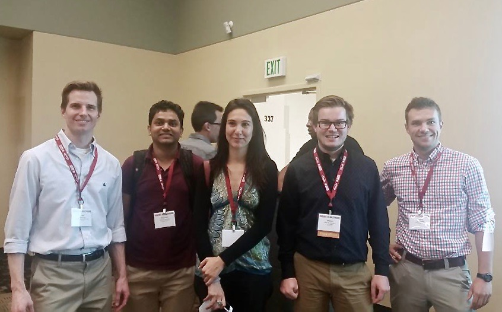

The j-ISBA Blog
j-ISBA is the junior Section of ISBA (the International Society of Bayesian Statistics) aimed to promote events and forums for early career Bayesian researcher.
This blog wants to connect young Bayesians and propose events, conferences, training days, discussions and videos of interest, advertize positions all around the world, collect ideas… everything we need to create a network of young researchers. We know that entering a new career may be difficult, orient yourself in (or out of) the academic life may be confusing. Even looking at the literature for your work may be sometimes overwhelming. We want to propose this blog to make you more aware of all the possibilities you have, to provide introductions to some subjects of interest, to ask question or give your opinion.
The j-ISBA blog is also an experiment: we welcome any suggestion coming from the readers! If you want to propose a new post, please feel free to contact Clara Grazian (jisba.section@gmail.com). We hope you will like our experiment and want to comment both the posts and the blog itself. We hope you enjoy your visit!
Some news for nordic Bayesians
Clara Grazian 18/09/2017
Are you coming from the European nordic countries? (Whatever that means!)
Do you know that there is a group devoted to you? Bayes Nordics is an email-list for the dissemination of news and events on Bayesian analysis in the Nordic countries. Everyone can join!
The event are always of great interest, for example on November 1st there will be three 3-hour workshops of relevance to the Bayesian paradigm at the 3rd Nordic Chapter Risk Conference.
1) Building Bayesian networks - Sakari Kuikka, Inari Helle (University of Helsinki)
2) How to use expert knowledge elicitation in risk and uncertainty assessment? - Olaf Mosbach-Schultz, Nikolaos Georgiadis, Tony Smith (European Food Safety Authority)
3) Probability bounds analysis: getting something from hardly anything - Scott Ferson (University of Liverpool)
Remember that the last day to send in abstracts is Sept 25th or just attend.
More info at the website link text
Statistics and other strangers.
Clara Grazian 11/09/2017
Welcome to all!
I would like to thank the j-ISBA committee who makes this blog and the new website available. Let's get started with this experiment! (I'll try to maintain a weekly frequency in the posts!)
I think the best way to start is a thought about what is statistics today; one of the key point is that it is a data-driven science, in the sense that it studies ways to analyse the data but also the data available drive the development of the discipline. And who better than Google can give an idea on how to work with data?
I propose you a video showing Tim Hesterberg, Senior Statistician at Google, presenting examples on how they deal with the huge amount of data they have. Enjoy!
Topic Contributed Session organized by j-ISBA at JSM2017.
Valerie Poynor 03/09/2017
The j-ISBA committee members would like to give a BIG thanks and congratulations to Frank Marrs, Willem Van Den Boom, Roberta De Vito, Raj Guahniyogi, and Jeffrey Miller for delivering outstanding presentations during the j-ISBA session at this year's Joint Statistical Meeting in Baltimore! Of course, another thanks goes out to the facilitator of the session, James Johndrow, who did a wonderful job at keeping speakers and audience discussions on point and true to the time allotted. The session took place July 31, 2017 at 8:30am and was titled: Junior Research in Bayesian Modeling for High-Dimensional Data. The session focused on new Bayesian techniques on dealing with high-dimesional data such as variable selection, shrinkage methods, and dimensionality reduction. Applications of these techniques included but were not limited to neuroscience, genetics, economics, biology, geological, and environmental data. The session attracted about twenty audience members despite being an early morning session. The questions from the audience were though provoking and lead to stimulating discussions. Needless to say the session was a success!! The j-ISBA committee is looking forward to many more j-ISBA sponsored sessions that feature the many talented young Bayesian researchers.